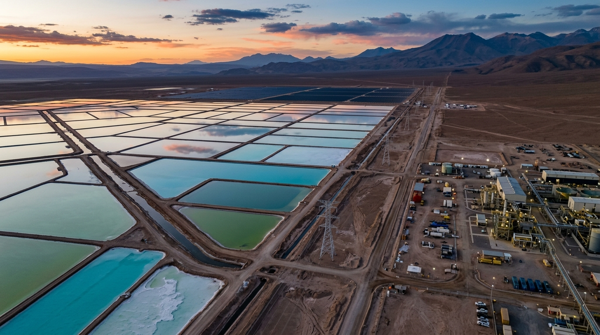

Navigating the New Sanctions Architecture
How evolving sanctions regimes are reshaping cross-border commerce, investment flows, and corporate compliance frameworks.
Read Brief →Rigorous research, applied intelligence, and strategic advisory at the intersection of law, economics, and emerging technology.
The Centre produces rigorous, evidence-based research that illuminates emerging global trends and their strategic implications — flagship reports, global outlooks, policy papers, working papers, and comparative regulatory analysis.
Translating complex global developments into focused, decision-relevant intelligence — spanning geopolitical intelligence, geoeconomic monitoring, regulatory intelligence, country risk assessment, and strategic risk monitoring.
Supporting organisations navigating complex and rapidly evolving international environments — market-entry intelligence, geopolitical risk assessment, regulatory strategy, scenario planning, and cross-border intelligence.
Where geopolitics meets industry
The Centre analyses how evolving configurations of power, capital, trade, energy, regulation, and technology are reshaping economies, industries, and institutions worldwide.
The evolving legal and regulatory architecture that governs international commerce, investment, technology, sanctions, and cross-border transactions across fragmented jurisdictions.
→The strategic deployment of trade, investment, finance, technology, resources, and economic policy as instruments of statecraft, economic security, and international influence.
→The global financial architecture, sovereign and institutional capital flows, economic restrictions, and the deepening nexus between capital allocation and geopolitical risk.
→Energy security, global markets, critical minerals, transition finance, and the reconfiguration of global energy systems impacting industrial competitiveness.
→Artificial intelligence, semiconductors, digital economies, autonomous systems, cyber policy, technology governance, and nascent cross-border regulatory frameworks.
→Strategic technologies, defence regulation, security frameworks and the foundations of economic resilience.
Explore Sector →Global health security, pharmaceutical regulation, supply-chain integrity, innovation pathways and market access.
Explore Sector →Energy security, transition pathways, critical minerals, infrastructure development and climate-related investment.
Explore Sector →AI governance, digital regulation, semiconductors, cyber policy and the broader landscape of emerging technologies.
Explore Sector →Global financial architecture, investment flows, fintech innovation, regulatory evolution and the geopolitics of finance.
Explore Sector →Trade corridors, logistics networks, digital infrastructure, investment frameworks and regional connectivity.
Explore Sector →Technology supply chains, industrial policy, investment dynamics and strategic dependencies.
Explore Sector →An examination of India's evolving role within global technology value chains, semiconductor ecosystems, and digital governance frameworks — and what this means for businesses, investors, and policymakers navigating the new technology order.
How evolving sanctions regimes are reshaping cross-border commerce, investment flows, and corporate compliance frameworks.
Read Brief →
The intersection of energy transition and mineral supply chains — risks, dependencies, and strategic opportunities.
Read Paper →India constitutes the Centre's principal geographic anchor. Research examines India's evolving role in global trade, investment, technology, energy, defence, pharmaceuticals and critical supply chains, together with its relationships with South Asian neighbours and major global partners.
Serving leaders who shape the global agenda across seven strategic constituencies.
Advising enterprise leadership navigating international sanctions, cross-border regulatory shifts, and supply-chain realignment.
Providing sovereign wealth funds, private equity, and institutional investors with geopolitical risk assessments and regulatory foresight.
Delivering comparative policy analysis, strategic scenario planning, and cross-border regulatory intelligence to ministries and regulatory bodies.
Contributing empirical research and policy frameworks to multilateral institutions shaping global economic governance.
Partnering with peak industry bodies to analyze regulatory headwinds, trade barriers, and industrial policy developments.
Collaborating with leading global policy institutes, law faculties, and think tanks on joint research initiatives.
The SLR Centre for Global Law, Geoeconomics and Emerging Technologies provides senior decision-makers with the analytical depth and strategic foresight needed to navigate an increasingly fragmented international order.
"Situated at the nexus of law, geoeconomics, and emerging technologies, the Centre bridges scholarly rigor and executive decision-making."